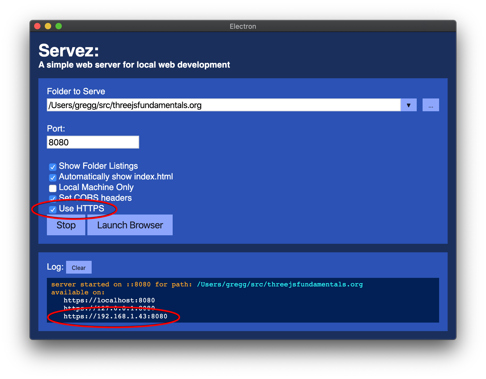
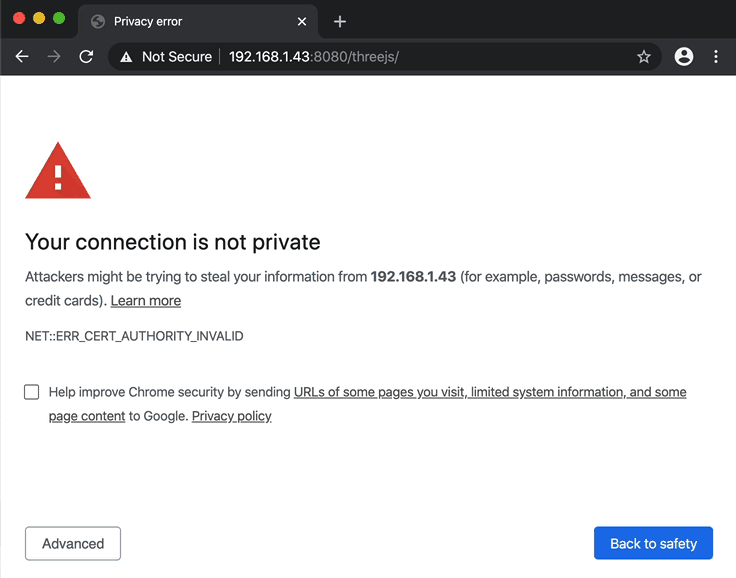

在 three.js 中制作 VR 应用程序非常简单。你基本上只需要告诉 three.js 你想使用 WebXR。如果你考虑一下，关于 WebXR 有一些事情应该是清楚的。摄像机的朝向由 VR 系统本身提供，因为用户通过转动头部来选择观察的方向。同样，视野和纵横比也会由 VR 系统提供，因为每个系统的视野和显示纵横比都不同。
我们来举一个在文章中关于制作响应式网页的例子，并让它支持 VR。
在我们开始之前，你将需要一个支持 VR 的设备，比如 Android 智能手机、Google Daydream、Oculus Go、Oculus Rift、Vive、三星 Gear VR，或者带有 WebXR 浏览器 的 iPhone。
接下来，如果你是在本地运行，你需要运行一个简单的网页服务器，具体操作可以参考 设置文章。
如果你用来观看 VR 的设备不是你运行程序的同一台电脑，你需要通过 https 提供网页，否则浏览器将不允许使用 WebXR API。文章 设置指南 中提到的服务器 Servez 有一个使用 https 的选项。检查它并启动服务器。

记下这些 URL。你需要找到你电脑的本地 IP 地址。通常它会以 192、172 或 10 开头。将完整地址（包括 https:// 部分）输入到你的 VR 设备浏览器中。注意：你的电脑和 VR 设备需要在同一个本地网络或 WiFi 上，并且你可能需要在家庭网络环境下使用。注意：许多咖啡厅设置为不允许这种机器对机器的连接。
你可能会看到类似下面的错误提示。点击“高级”，然后点击继续。

现在你就可以运行你的示例了。
如果你真的打算进行 WebXR 开发，你还应该了解的一件事是 远程调试，这样你就可以看到控制台警告、错误，当然还可以实际 调试你的代码。
如果你只想看到下面代码的效果，你可以直接从这个网站运行代码。
我们需要做的第一件事是在引入 three.js 之后引入 VR 支持
import * as THREE from 'three';
+import {VRButton} from 'three/addons/webxr/VRButton.js';
然后我们需要启用 three.js 的 WebXR 支持，并将其 VR 按钮添加到我们的页面
function main() {
const canvas = document.querySelector('#c');
const renderer = new THREE.WebGLRenderer({antialias: true, canvas});
+ renderer.xr.enabled = true;
+ document.body.appendChild(VRButton.createButton(renderer));
我们需要让 three.js 运行我们的渲染循环。到目前为止，我们使用了一个 requestAnimationFrame 循环，但为了支持 VR，我们需要让 three.js 为我们处理渲染循环。我们可以通过调用 WebGLRenderer.setAnimationLoop 并传入一个函数来调用循环来实现这一点。
function render(time) {
time *= 0.001;
if (resizeRendererToDisplaySize(renderer)) {
const canvas = renderer.domElement;
camera.aspect = canvas.clientWidth / canvas.clientHeight;
camera.updateProjectionMatrix();
}
cubes.forEach((cube, ndx) => {
const speed = 1 + ndx * .1;
const rot = time * speed;
cube.rotation.x = rot;
cube.rotation.y = rot;
});
renderer.render(scene, camera);
- requestAnimationFrame(render);
}
-requestAnimationFrame(render);
+renderer.setAnimationLoop(render);
还有一个细节。我们可能应该设置一个相当于站立用户平均高度的相机高度。
const camera = new THREE.PerspectiveCamera(fov, aspect, near, far); +camera.position.set(0, 1.6, 0);
并将立方体移动到相机前面
const cube = new THREE.Mesh(geometry, material); scene.add(cube); cube.position.x = x; +cube.position.y = 1.6; +cube.position.z = -2;
我们将它们设置为 z = -2，因为相机现在将位于 z = 0，相机默认朝着 -z 轴方向。
这提出了一个非常重要的点。VR中的单位是米。换句话说，一个单位 = 一米。这意味着相机位于0点上方1.6米的位置。立方体的中心位于相机前方2米处。每个立方体的大小为1x1x1米。这一点很重要，因为VR需要根据用户在现实世界中的情况来调整东西。这意味着我们需要在three.js中使用的单位与用户自身的动作相匹配。
通过这些，我们应该可以在相机前方得到3个旋转的立方体，并有一个按钮可以进入VR模式。
我发现如果我们在摄像机周围有一些东西作为参考，比如一个房间，VR的效果会更好，所以让我们添加一个简单的网格立方体贴图，就像我们在背景文章中讲到的那样。我们只需为立方体的每一面使用相同的网格纹理，这样就会得到一个网格房间。
const scene = new THREE.Scene();
+{
+ const loader = new THREE.CubeTextureLoader();
+ const texture = loader.load([
+ 'resources/images/grid-1024.png',
+ 'resources/images/grid-1024.png',
+ 'resources/images/grid-1024.png',
+ 'resources/images/grid-1024.png',
+ 'resources/images/grid-1024.png',
+ 'resources/images/grid-1024.png',
+ ]);
+ scene.background = texture;
+}
这样更好了。
注意：要真正看到VR效果，你需要一个兼容WebXR的设备。我相信大多数安卓手机可以通过Chrome或Firefox支持WebXR。对于iOS，你可能可以使用这个WebXR应用，不过总体来说，截至2019年5月，iOS对WebXR的支持仍不完善。
要在 Android 或 iPhone 上使用 WebXR，您需要一个适用于手机的VR 头戴设备。您可以以 5 美元购买纸板材质的，也可以花到 100 美元。不幸的是，我不知道推荐哪一款。多年来我购买过 6 个，它们的质量各不相同。我从未花费超过大约 25 美元。
只是提到一些问题
它们适合你的手机吗
手机有各种尺寸，因此VR头显需要匹配。许多头显声称可以匹配多种尺寸。我的经验是，匹配尺寸越多，头显实际上越差，因为它们不是为特定尺寸设计的，而是为了匹配更多尺寸而不得不做出妥协。不幸的是，多尺寸头显是最常见的类型。
它们能针对你的脸部进行调焦吗
某些设备的调节功能比其他设备更多。一般最多有2种调节方式。镜片离眼睛的距离和镜片之间的距离。
它们是否反光过强
许多耳机在你的眼睛和手机之间有一层塑料锥。如果那层塑料是有光泽或反光的，它就会像镜子一样反射屏幕，非常分散注意力。
几乎没有评论涉及到这个问题。
佩戴在脸上舒适吗。
大多数设备像眼镜一样架在你的鼻子上。这几分钟后可能会感到疼痛。一些设备有绕过头部的带子。还有一些有第三条带子盖过头部。这些带子可能会也可能不会帮助设备保持在正确的位置。
事实证明，对于大多数（所有？）设备，你的眼睛需要与镜片居中。如果镜片略高于或低于你的眼睛，图像就会失焦。这可能非常让人沮丧，因为图像可能一开始是清晰的，但45-60秒后，设备可能上移或下移了1毫米，你会突然意识到自己一直在努力对焦一个模糊的图像。
它们能支持你的眼镜吗。
如果你戴眼镜，那么你需要查看评论来了解某款头显是否适合戴眼镜的人使用。
很遗憾，我真的无法提供任何推荐。谷歌有一些用纸板制作的便宜推荐，有些价格低至5美元，所以也许可以从那里开始，如果你喜欢的话，再考虑升级。5美元就像一杯咖啡的价格，所以真的可以尝试一下！
设备也有三种基本类型。
三自由度（3dof），没有输入设备
这通常是手机型，尽管有时你可以购买第三方输入设备。三自由度意味着你可以上下（1）、左右（2）看，并且可以左右倾斜你的头（3）。
三自由度（3dof）带有一个输入设备（3dof）
这基本上就是 Google Daydream 和 Oculus GO
这些设备也提供 3 自由度，并且包含一个小型手柄，在 VR 中像激光指示器一样使用。激光指示器也只有 3 自由度。系统可以辨别输入设备指向的方向，但无法确定设备的位置。
具有输入设备的 6 自由度（6dof）
这些才是真正的货色哈哈。6自由度意味着这些设备不仅知道你在看哪个方向，还知道你的头实际上在哪里。这意味着如果你从左到右移动，或者前后移动，或者站起来/坐下，设备都能记录下来，虚拟现实中的一切也会随之移动。这种感觉既诡异又令人惊叹。用一个好的演示，你会被震撼，至少我曾经是，现在仍然是。
此外，这些设备通常包括两个控制器，每只手一个，系统可以准确地识别你的双手位置以及它们的朝向，因此你可以通过伸手、触碰、推、扭动等方式在虚拟现实中操作物体。
6 个自由度设备包括 Vive 和 Vive Pro，Oculus Rift 和 Quest，我相信所有的 Windows MR 设备也都包括在内。
涵盖了这些之后，我不确定哪些设备可以与 WebXR 一起使用。我 99% 确定大多数 Android 手机在运行 Chrome 时可以使用。你可能需要在 about:flags 中启用 WebXR 支持。我也知道 Google Daydream 也能使用，同样需要在 about:flags 中启用 WebXR 支持。Oculus Rift、Vive 和 Vive Pro 可以通过 Chrome 或 Firefox 使用。我对 Oculus Go 和 Oculus Quest 不太确定，因为它们都使用定制操作系统，但根据网上的信息，它们似乎都可以使用。
好的，在关于 VR 设备和 WebXR 的漫长绕行之后 有一些事情需要说明
同时支持 VR 和非 VR
据我所知，至少截至 r112，three.js 没有简单的方法来同时支持 VR 和非 VR 模式。理想情况下，如果不在 VR 模式，你应该能够使用任何你想要的方式来控制摄像机，例如 OrbitControls，并且当切换进出 VR 模式时，你会获得某种事件，以便可以开启/关闭控制器。
如果 three.js 添加了一些支持同时进行的功能，我会尝试更新这篇文章。在那之前，你可能需要你的网站的两个版本或者在 URL 中传入一个标志，类似于
https://mysite.com/mycooldemo?allowvr=true
然后我们可以添加一些链接来切换模式
<body> <canvas id="c"></canvas> + <div class="mode"> + <a href="?allowvr=true" id="vr">Allow VR</a> + <a href="?" id="nonvr">Use Non-VR Mode</a> + </div> </body>
，并添加一些 CSS 来定位它们
body {
margin: 0;
}
#c {
width: 100%;
height: 100%;
display: block;
}
+.mode {
+ position: absolute;
+ right: 1em;
+ top: 1em;
+}
，在你的代码中你可以这样使用那个参数
function main() {
const canvas = document.querySelector('#c');
const renderer = new THREE.WebGLRenderer({antialias: true, canvas});
- renderer.xr.enabled = true;
- document.body.appendChild(VRButton.createButton(renderer));
const fov = 75;
const aspect = 2; // the canvas default
const near = 0.1;
const far = 5;
const camera = new THREE.PerspectiveCamera(fov, aspect, near, far);
camera.position.set(0, 1.6, 0);
+ const params = (new URL(document.location)).searchParams;
+ const allowvr = params.get('allowvr') === 'true';
+ if (allowvr) {
+ renderer.xr.enabled = true;
+ document.body.appendChild(VRButton.createButton(renderer));
+ document.querySelector('#vr').style.display = 'none';
+ } else {
+ // no VR, add some controls
+ const controls = new OrbitControls(camera, canvas);
+ controls.target.set(0, 1.6, -2);
+ controls.update();
+ document.querySelector('#nonvr').style.display = 'none';
+ }
。这好还是不好我不知道。我有一种感觉，VR 所需的东西和非 VR 所需的东西往往非常不同，所以除了最简单的情况，也许两个独立的页面会更好？你得自己决定。
由于各种原因，这在本网站的实时编辑器中无法工作，所以如果你想查看，请 点击这里。 它应该会以非VR模式启动，你可以使用鼠标或手指移动摄像机。点击“允许VR”应该会切换为允许VR模式，如果你在VR设备上，你应该能够点击“进入VR”。
决定 VR 支持的级别
上面我们介绍了三种类型的VR设备。
你需要决定你愿意投入多少精力来支持每种类型的设备。
例如，最简单的设备没有输入。通常你能做到的最好方法是设置一些按钮或物体在用户视野中，如果用户将某个标记在显示屏中心对准这些物体大约半秒钟，那么该按钮就会被点击。一种常见的用户体验是显示一个小计时器，它会出现在物体上方，表示如果你将标记保持在上面一会儿，该物体/按钮将被选中。
由于没有其他输入，这差不多是你能做到的最好了。
下一个层级，你会有一个3自由度的输入设备。通常它可以指向事物，并且用户至少有两个按钮。Daydream 也有一个触摸板，可以提供正常的触摸输入。
无论如何，如果用户有这种类型的设备，让用户用控制器指向物体比让他们用头部通过看向物体来实现要舒适得多。
类似级别的可能是带有游戏机控制器的 3DOF 或 6DOF 设备。你需要决定在这里要怎么做。我猜最常见的情况是用户仍然需要看着去指向，控制器仅用于按键。
最后一个级别是拥有 6DOF 头显和两个 6DOF 控制器的用户。这些用户会发现只有 3DOF 的体验往往令人沮丧。同样，他们通常期望能够在 VR 中用手虚拟操作物体，因此你需要决定是否要支持这一点。
正如你所看到的，入门 VR 相对容易，但真正制作一个可发布的 VR 应用仍然需要大量的决策和设计。
这是一个关于 three.js VR 的简短介绍。我们将在后续文章中介绍一些输入方法。